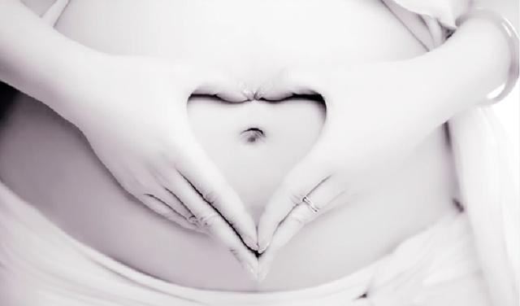

1、造成胎儿先天性功能缺陷，PM2.5对胎儿发育的影响表现在它可能会给新生儿的DNA烙上特殊的生物化学“烙印”，并且高浓度的细颗粒物污染可能会影响胚胎的发育，围产儿、低重儿、宫内发育迟滞、先天性功能缺陷都与大气颗粒物的浓度相关。
2、影响儿童智力发展，PM2.5吸附的污染物既有钠、镁、钙、铝、铁等元素，也有铅、砷等主要源自人类污染的重金属元素。这些铅中毒将会影响孩子的智力发展，其他重金属也对人体有极大危害。
3、诱发儿童呼吸系统发炎，由于婴幼儿呼吸道纤毛运动比较差，不能有效地清除尘埃和异物，因此容易患呼吸道感染PM2.5可直接沉积于肺部，其中更小的微粒还可通过肺部渗透进其他器官。
详情请戳：http://www.sangebaba.com/

点击二维码关注三个爸爸公众号